JOÃO QUEIRÓS
/graphic design
cut 01 · layout
I · THE BRIEF
One blank
sheet
II · ROUGHS
Every mark starts
rough
III · INK AND PAINT
From pencil to
colour

Brand identity design for businesses
ready to grow.
PENCILLED, INKED AND SCORED IN CODE